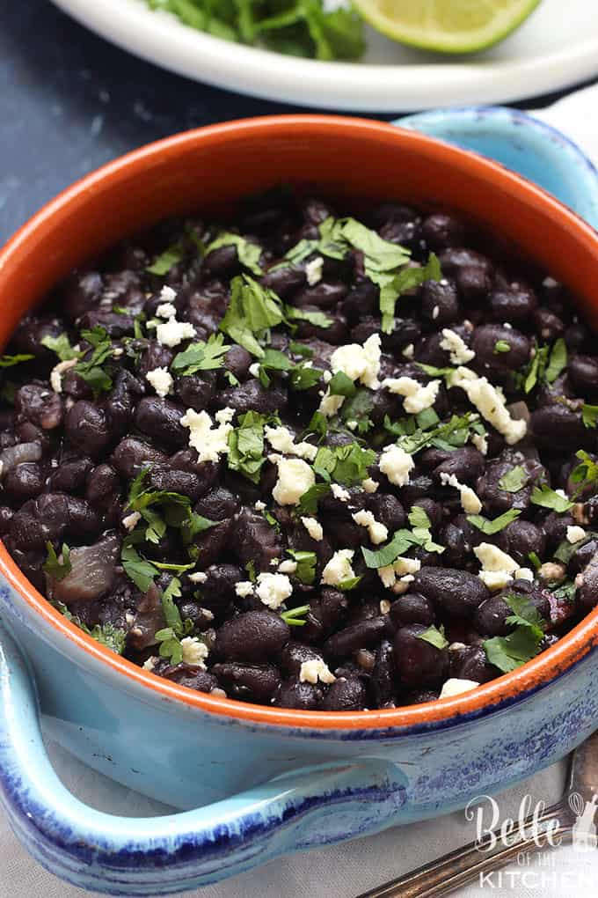

Perfect Side Dish of Mexican Black Beans
These Mexican Black Beans are the perfect side dish for tacos, enchiladas, or any southwest inspired meal! They come together quickly and easily, and you will love how flavorful and delicious they are!
Ingredients
- 1 teaspoon olive oil
- 1/2 cup chopped onions
- 3 cloves garlic, minced
- 16 oz black beans
- 1/4 cup chopped cilantro
- 1 teaspoon cumin
- 1/2 teaspoon salt
Instructions:
- In a small sauce pan, heat the olive oil over medium heat. Add the onions and garlic and cook for 3-4 minutes, just until the onions begin to soften.
- Add the undrained black beans, cilantro, cumin, and salt. Stir well and reduce heat to medium low. Allow to cook for 15-20 minutes, stirring occasionally. Taste and adjust seasonings to your liking.
- Serve sprinkled with more chopped cilantro and cotija cheese if desired. Enjoy!
Back to top
Back to home page